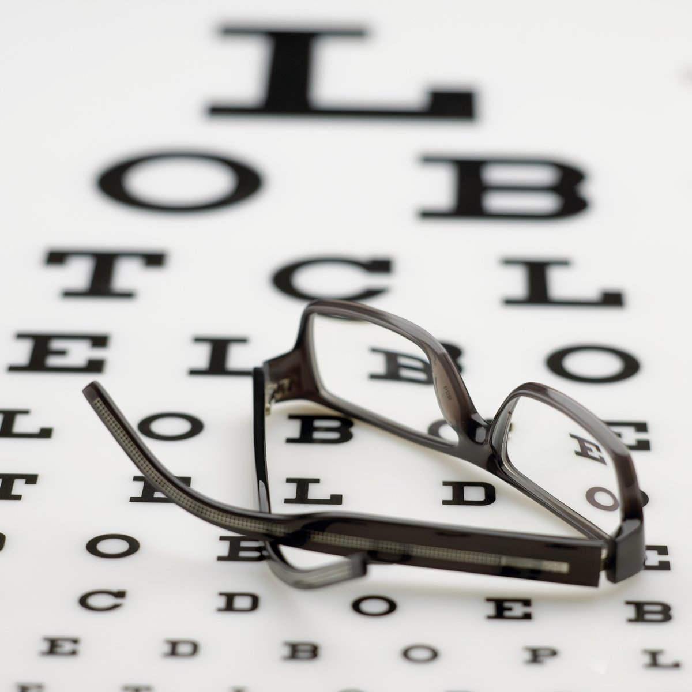
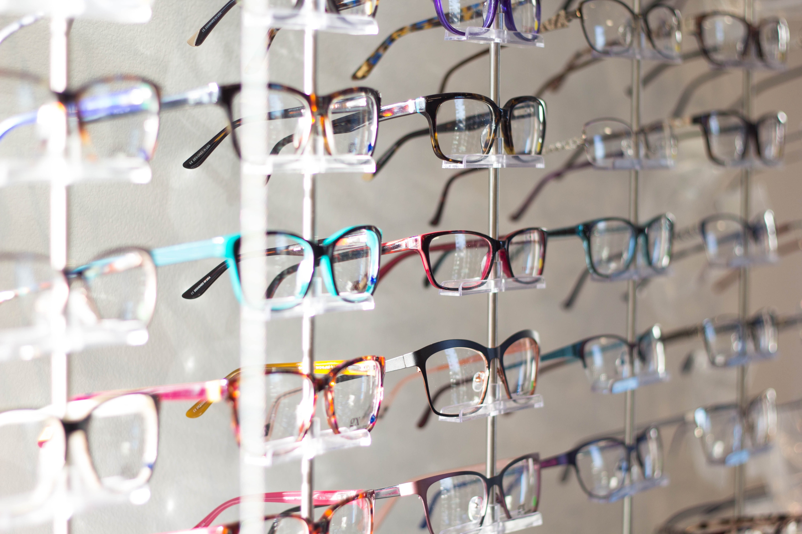
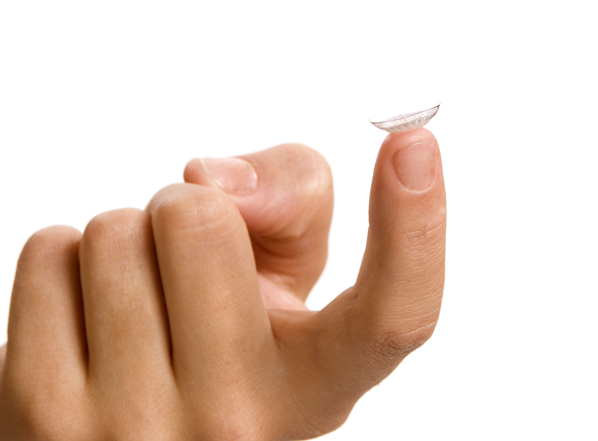
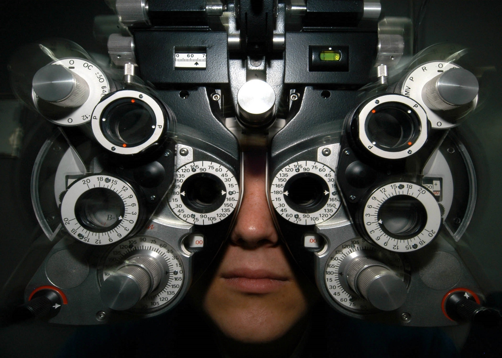
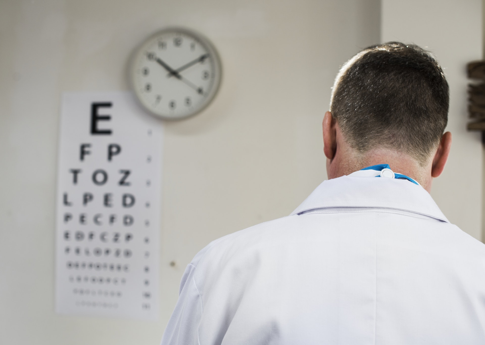

Norman Vision Clinic
Moore Vision Clinic
705 City Avenue
Moore, OK 73160
(405) 794-2020
2501 Boardwalk
Norman, OK 73069
(405) 321-2155


Conditions Treated By Our Norman & Moore Optometry Team
At The Vision Clinic of Norman & Moore, our optometry staff considers your vision and eye health our number one priority. That's why we've spent years developing the tools, techniques, and a state-of-the-art facility to help us diagnose, treat, and prevent a wide variety of conditions affecting your eyes.
Vision problems can affect people of any age. Be sure to see an optometrist as soon as you notice any signs or symptoms affecting your eyesight, including blurry vision, trouble reading, difficulty seeing at night, the presence of "floaters" or "flashes" in your field of vision, red or itchy eyes, increased sensitivity to light, and the feeling of grittiness in the eyes.
You should also see your optometrist on at least a once-a-year-basis. Why? So many eye health conditions don't present with any signs or symptoms until well after the disease process has already been going on for quite some time! Preventive optometry and early detection is the best way to minimize your risk of developing an eye disease and minimize the impact of the disease if one is detected on a comprehensive eye exam.
Many parents also opt to bring their children in for pre-school and pre-sport vision testing. It's a great way to ensure that their child's eyesight is as optimal as possible so that the kid can participate fully in class, on the field, or in any other activity that he or she participates in.
So, what kind of conditions do we detect? Our optometry team both diagnoses and treats several of the following common eye-related problems:
- Chronic dry eye
- Conjunctivitis (pink eye) and other ocular infections
- Macular degeneration
- Glaucoma
- Cataracts
- Diabetic retinopathy
- Presbyopia (farsightedness)
- Myopia (nearsightedness)
- Astigmatism
- Visual processing disorders
- Pre- and post-surgical management (including LASIK eye surgery)
If you've been diagnosed with an eye health condition, our optometry team will support you with the compassion and clinical expertise to help you manage your disease. We'll also take the time needed to answer your questions, go over your treatment options, and teach you additional strategies you can use to maximize your comfort and quality of vision.
Looking For An Eye Doctor Near You? Get To Know Our Eye Doctor Team Today At The Norman Vision Clinic
Our team of optometrists are some of the best eye doctors around the areas of Norman and Moore. We're confident that no matter what eye health condition you're dealing with, our eye doctor staff can help you find the best eye care solution to meet your needs, budget, and lifestyle.
To schedule an appointment at The Norman Vision Clinic, call (405) 321-2155. Or, to schedule an appointment at The Moore Vision Clinic, call (405) 794-2020.
We look forward working with you and helping you see a clearer future. Call today!
Comprehensive Eye Examinations in Norman & Moore

If you're like most people, you treasure your eyesight and hope to enjoy optimal vision for many more years. But just like any other part of the body, the eyes can fall prey to problems that threaten their health and function. That's why you need to schedule regular comprehensive eye exams to catch these problems in their early stages. Our optometry team at The Vision Clinic can play a vital role in preserving your eyesight through our comprehensive eye examinations..
How Regular Eye Exams Can Help Save Your Sight
It's all too easy to fall into a pattern of having your eyes checked only in response to changes in your vision or other obvious signs of trouble -- and of course you should consult your eye doctor at such times. But even if you aren't showing symptoms of an eye problem, that doesn't necessarily mean your eyes are fine. Many progressive eye diseases such as macular degeneration, glaucoma and diabetic eye disease can cause gradual but permanent destruction to the ocular tissue; by the time you can recognize a change in your vision, your eyes may have already sustained serious, irreparable damage. The best way to prevent this scenario is by getting your eyes examined every year by your Norman Or Moore optometrist.
Understanding Your Eye Examination
A comprehensive eye examination at The Vision Clinic consists of several stages. One of the first things your optometrist will do is study your medical history and ask you about any symptoms or concerns you may be contending with. We will then administer exams according to three basic categories:
- Eye function exams - A series of easy, painless tests can determine how well you can focus, track moving objects, use your peripheral vision, see colors and perceive depth. Your eye doctor will also observe how light entering your eye is being refracted.
- Eye health exams - Eye health exams can make all the difference in helping you preserve your vision for life. For example, pressure testing (tonometry) can tell us whether you're at risk for glaucoma. Viewing the front of your eye under a bright light can reveal cataracts, corneal ulceration and other problems. Dilating your pupils and viewing the inside of your eyes helps us pinpoint signs of optic nerve damage (from glaucoma), macular degeneration, diabetic eye disease and various forms of retinal damage. If we do find a problem, we will recommend prompt treatment to get it under control.
- Visual acuity exams - Even healthy eyes may have trouble seeing clearly, thanks to refractive errors such as nearsightedness, farsightedness, presbyopia and astigmatism. We can observe how well you read various lines on an eye chart to determine whether you have trouble at specific distances. This enables us to create or update your prescription for corrective eyewear or (if you so choose) refractive surgery.
Protect Your Eyesight in Norman & Moore
If you're in Norman or Moore and you want to get the most out of your eyesight, take steps to safeguard it today. Call The Norman or Moore Vision Clinic at either of our two optometry offices to schedule an eye exam! (405) 321-2155
Prescription Glasses From Norman Or Moore Vision Clinic
When you need glasses, you’re concern about a number of issues. First, you want the right prescription that will allow you see at optimum levels, for work and for play. Next, you want eyeglass frames that flatter your face and express your personality. Finally, you want comfort, with high quality frames that feel like a natural part of you. At The Vision Clinic, we can ensure that your glasses satisfy these requirements, for your full satisfaction.
Making Sure Your Prescription Is Right
Our doctors of optometry use their extensive knowledge and up-to-date equipment to ensure that you have the most accurate prescription to ensure clear vision. Your eye exam will test for a variety of issues, such as myopia, hyperopia, astigmatism, proper tracking, ease of focusing and general eye health. When you have regular eye exams, your optometrist will be able to detect the small changes that indicate you need a different prescription or conditions that may require more extension vision care.
Brand Names Frames So You Look Your Best
Prescription eyeglasses have come a long way since the days of basic vision correction. Today’s frames are carefully designed to reflect current styles and can fit your every mood. We offer many brand names, including Polo, Kenneth Cole, Emporio Armani, Prada, Versace, Escada, Tommy Hilfiger, Disney and Joseph Abboud. We know that your prescription eyeglass frames are a reflection of your personality, and we strive to supply the best in frames for your unique needs. After your eye examination, we invite you to take your time browsing our selection, to make sure you achieve the look you have in mind. Our friendly staff can help you find the right size, color and shape to fit your face perfectly.
Contact The Norman or Moore Vision Clinic For Your Prescription Eyeglasses
Call The Norman Vision Clinic, call (405) 321-2155. or The Moore Vision Clinic at (405) 794-2020 for an appointment with an eye doctor to have your eyes examined and to see our large inventory of brand name glasses.
Contact Lenses From Your Norman or Moore Optometrist
Contact lenses are a tremendously effective and convenient vision correction solution for many residents of Norman or Moore who need or want a removable alternative to eyeglasses. Today's contact lenses are safer, more comfortable and better able than correct a wide range of vision issues than previous generations of lenses -- especially with expert guidance and fitting. Any optometrist here at The Norman or Moore Vision Clinic can help you get the perfect contact lenses for your needs and lifestyle.
The All-important Contact Lens Exam
If you've never had contact lenses before, you might be surprised to learn that obtaining a corrective vision prescription, while sufficient for ordering eyeglasses, is only the first step in getting fitted for contact lenses. Your optometrist at The Vision Clinic will also administer a contact lens exam. This specialized exam accomplishes such critical objectives as:
- Measuring your pupil and iris diameters
- Measuring your corneal curvature with an instrument called a keratometer
- Mapping every little pit or irregularity on your corneas through a technique called corneal topography
- Discussing any eye health conditions you might have that may make contact lenses more of a challenge, such as dry eye, keratoconus and giant papillary conjunctivitis (GPC)
- Considering the requirements of complex refractive errors such as presbyopia or astigmatism
We will also examine how your specific lifestyle considerations may impact your contact lens choices. For instance, if you prefer to insert and remove your lenses as infrequently as possible, we may suggest extended-wear contacts you may sleep in for up to 2 weeks at a time. If you plan on wearing your glasses much of the time or you don't want to bother with the cleaning and maintenance necessary for safe use of permanent contacts, we may suggest daily disposable lenses that you wear once and throw away.
Which Contact Lenses Are Right for You? Your Eye Doctor Can Provide Them
Your Norman or Moore eye doctor can offer many different types of contact lenses to suit even hard-to-fit cases. In addition to the ever-popular soft contacts, we also provide rigid gas permeable (RGP) lenses that feature superb vision correction (without collecting the protein deposits that irritate some sensitive individuals). We can also fit you with specialized options such as:
- Toric contact lenses to correct astigmatism
- Scleral contact lenses for patients with dry eye or keratoconus
- Multifocal contact lenses to correct presbyopia
- Contact lenses made of special moisture-retaining materials
Once you've selected your ideal contact lens option, multiple fittings might be needed to make sure your new contacts will serve you effectively and comfortably.
Call Our Norman or Moore Optometry Office to Get Started
If you're ready to enjoy clear vision without having to deal with eyeglasses all the time, it just makes sense to look into contact lenses. To schedule an appointment at The Norman Vision Clinic, call (405) 321-2155. Or, to schedule an appointment at The Moore Vision Clinic, call (405) 794-2020.
We look forward working with you and helping you see a clearer future. Call today!
Eye Care for Eye Infections and Injuries with our Norman and Moore Optometrists
Having an eye infection or injury can put your vision at risk when you do not go for treatment. At The Vision Clinic, our eye doctor offers treatment for patients in Norman and Moore who have eye infections and injuries.
Common Eye Infections and Injuries
There are many different kinds of eye infections and injuries, but some occur more often.
- Conjunctivitis or pink eye: One of the most common types of infections that affect the eye is conjunctivitis or pink eye. This is a highly contagious infection that can be caused by viruses or bacteria.
- Viral keratitis: This is another type of viral infection that can affect the eyes. Viral keratitis includes ocular herpes from the Herpes simplex virus.
- Corneal abrasion: This eye injury can occur when something scratches the surface of your eye.
- Black eye: Swelling and discoloration around the eye can occur due to trauma.
- Chemical burns: These can occur when you accidentally splash a chemical substance near your face, such as household cleaning products.
When to Seek Care
If you have an injured eye or an eye infection, it is important to seek care from our optometrist as soon as you can. Having your infection or injury promptly examined and treated helps lower the risk of complications, which can be serious. Keep in mind that untreated eye infections and injuries can end up leading to permanent vision loss in some cases.
Treatment for Eye Infections and Injuries in Norman and Moore
When you have an eye infection or injury, our optometry team in Norman and Moore will provide you with care as quickly as possible. The treatment you will need depends on the type of infection or injury you have and how serious it is. Eye infections that are viral clear up on their own, but you will need antibiotics for a bacterial infection. You should not wear contact lenses with an infection until it clears up since they can cause additional irritation. You can also end up with another infection if your contacts are contaminated.
Treatments for eye injuries vary based on the type of injury and how severe the damage is. Immediate care can help ease redness, discomfort, burning and other symptoms you might be experiencing. Getting help as soon as possible also lowers the risk of vision loss and other complications with eye injuries.
Visit Our Optometrist for Eye care
If you have an eye infection or injury, visit our Norman or Moore optometrist for eye care. We provide prompt treatment for infections and injuries that help your eyes recover and stay healthy.
Optical Dispensing in Norman and Moore
Wearing prescription eyeglasses is necessary when you have a condition that impairs your vision, such as nearsightedness or farsightedness. There are several types and brands available, which might make it seem difficult to choose from. At The Vision Clinic, our eye doctor and optometry team in Norman or Moore provide you with help in selecting the perfect eyeglasses and ensuring that they fit properly.
Quality Prescription Glasses
When you need to wear corrective lenses, it is important to make sure that you have high-quality prescription glasses. At The Vision Clinic, we put time and effort into making your glasses, so that you have a pair that you can rely on for clear vision. We carry a wide selection of eyeglasses, including brand name frames and lenses with optional features, such as no glare coatings. Our optometry team can provide you with help choosing the right combination of lenses and frames.
Lens Features for Improved Comfort
We have many lens features available for you to choose from in order to enjoy enhanced comfort while wearing your glasses. Our features include thin, lightweight lenses, lenses with no glare coating and ultra-violet protection coatings. We also offer Progressive/No-Line bifocals, safety lenses, polycarbonate lenses and Transitions lenses that turn darker when you go outdoors. Depending on your personal preferences and practical needs, our optometry team can help you select features for your lenses.
Wide Selection of Frames in Norman or Moore
Choosing frames for your eyeglasses involves knowing what color, shape and style flatter your face and eyes. At The Vision Clinic in Norman or Moore, we carry an impressive selection of fashionable, high-quality eyeglass frames for you to choose from. The brands we have available include the following:
- Polo (Ralph Lauren)
- Maui Jim Sunglasses
- Prada
- Emporio Armani
- Escada
- Joseph Abboud
- Kenneth Cole
- Tommy Hilfiger
- Disney
- Versace
Eyeglass Fittings
When you get your new eyeglasses, our optometry team will make sure that they fit you perfectly. If any adjustments need to be made in order to improve their fit, we will take care of them for you as quickly as possible. When you depend on The Vision Clinic for your glasses, you can rest assured that you will get a high-quality pair that offers a comfortable fit.
Contact Our Optometrist in Norman or Moore
If you need prescription eyeglasses in Norman or Moore, please contact The Vision Clinic to make an appointment. Our optometrist in Norman or Moore can help you select the right eyeglasses from a wide selection of frames and lenses. You can rely on our optical laboratory to make high-quality prescription eyeglasses using the latest equipment and lens materials. We also offer other eye care and optometry services to help keep your eyes healthy.
Lens Features:
- Thin, lightweight lenses
- Safety and Polycarbonate lenses
- Progressive / No-Line bifocals
- No glare coatings
- Transitions Lenses (tint when you go outside)
- Ultra-Violet protection coatings
Laser Vision Correction Information from our Optometrists in Norman and Moore
Laser vision correction is the ultimate top choice for many people when it comes to dealing with refractive errors. It could mean being able to ditch the glasses or contacts for good, which is an appealing proposition for many. However, laser vision correction is not for everyone. At The Vision Clinic, our optometrists in Norman or Moore can help you determine if laser vision correction is the right choice for you.
Laser Vision Correction
The human eye is a relatively round surface that focuses images on the back of the retina using this curve. However, many people have a curve that is flatter or more angled than it is rounded. This produces refractive errors such as myopia (nearsightedness) and hyperopia (farsightedness). Vision correction surgery uses a laser to remove tiny pieces of the cornea until it is as round as possible.
What is LASIK?
LASIK stands for laser-assisted in situ keratomileusis. It is one of the most common types of laser vision correction, and many people assume that all laser vision correction is LASIK. However, there are actually several types of vision correction surgery.
Other common types of laser vision correction surgeries include PRK, which like LASIK, corrects nearsightedness, farsightedness, and astigmatism, but only affects the cornea’s surface. RLE is cataracts surgery that involves replacing the lens and can be used to correct extreme cases of hyperopia and myopia.
Good and Bad Candidates for LASIK
Laser eye surgery is not for everyone. It cannot correct all types of vision errors, and the end results may not be perfect. People who meet certain criteria tend to fare better and be happier with the end results:
- Mild to moderate myopia
- Mild hyperopia
- Mild astigmatism
- Realistic expectations
The average LASIK patient has 20/25 vision after surgery and experiences some mild, usually temporary, side effects. LASIK does not prevent vision from deteriorating with age, so a person might still need glasses or contacts as they get older.
People whose results are more unpredictable or likely to be unsatisfactory may want to think about other types of vision correction. If you have conditions such as severe refractive error, certain eye diseases, refractive instability, or dry eye, your doctor may not recommend laser surgery. Refractive instability may be diagnosed if you have needed a new prescription in the last year or so. It is normal for people up until about their mid-20s, which is why many LASIK providers will not perform the procedure on people younger than this.
Before and After Considerations for Laser Vision Correction
Before surgery, our optometrist will need to perform a very thorough exam of your eyes and determine whether you are a good candidate for LASIK or not. If you are, you will need to be able to stop wearing your contacts for several days to weeks.
Although serious long-term complications are rare, people who are not willing to take this risk should ask their optometrist about other vision correction options. Complications that occur after surgery can range from mild to very serious and be permanent or temporary:
- Dryness
- Visual disturbances such as blurriness
- Halos
- Glare
- Undercorrection
- Overcorrection
- Vision loss
The Vision Clinic Provides Pre- and Post-LASIK Management with our Optometrists in Norman and Moore
If you want to know more about laser vision correction, call The Norman Vision Clinic at (405) 321-2155 or The Moore Vision Clinic at (405) 794-2020 for an appointment with an eye doctor to have your eyes examined!
Surgery Co-Management
Surgery Co-Management at The Vision Clinic in Norman and Oklahoma
Our clinic provides you with the referral for all of today’s ocular needs, and our doctors and staff have the experience to provide all of your pre and post-operative care for such surgeries as:
- Cataract surgery
- Laser surgery
- Retinal surgery
Additionally, we have excellent relationships with well established specialists throughout Oklahoma, and can help referrals to specialized eye doctors to manage such things as diabetic retinopathy, retinal detachments, retinal holes or tears, hemorrhages, macular degeneration, low vision needs, and vision therapy.
Contact us today to schedule an appointment! (405) 321-2155
Community Service And Support
Every year, our doctors and staff donate their knowledge, time, and compassion to our community. Those activities that are supported by our clinic include:
- Local fundraising events for schools, the YMCA, United Way, the Lions and Rotary civic organizations among others.
We believe in giving back to our communities by the giving of time, knowledge and talents to those individuals and organizations that promote positive, healthy and productive communities.
Frame Selection
Choosing the Right Frames
Glasses say so much about your personality and personal style. At The Vision Clinic, we are happy to work with you in selecting frames that complement your features. Our experienced optometry professionals work closely with you to select the proper frames to fit your budget as well as your cosmetic, lifestyle, and vision needs. While working with our experienced staff enables you to select the appropriate frames, we invite you to learn more about which frame styles complement various face shapes.
Square Face
A square face is often characterized by a strong jaw line, a broad forehead, and a wide chin and cheekbones. The width and length of the face are close to being equal. Frames should be selected to make the face look longer and to soften the square angles of the face. Choose frames that are slightly curved (like an oval shape) and that have more horizontal than vertical real estate.
Oval Face
The oval face is identifiable by its balanced proportions. The forehead is slightly wider than the chin and cheekbones are high. Frames should complement the natural proportions of the oval. Choose frames that are wide or wider than the broadest part of the face and that follow your brow line. Often, diamond or rectangular shapes work best for oval shapes.
Oblong Face
Although fairly similar to an oval shape, an oblong face is longer than it is wide. The ideal frames will shorten the face by creating a break in the length of the face. Choose frames that have depth and a low bridge to shorten the nose. Try frames that are round, deep, have low-triangle shapes, or that have strong vertical lines.
Round Face
A round or full face is characterized by having the same width and length. For round faces, frames that add length to the face often work best. Frames that lengthen the face are typically angular, narrow and are wider than they are deep. It is best to avoid round style frames as these will exaggerate the roundness and curves of the face.
Heart Shaped Face (or Base-up Triangle)
A heart shaped face looks like a heart or a triangle with the point facing down. The forehead is very wide and cheekbones are high while the face narrows towards the chin. Counterbalance the narrow chin by choosing frames that are wider at the bottom. Generally, light colored and rimless frames work best, although aviator, butterfly and low-triangle styles also work well.
Base-down Triangle Face
A base-down triangle face has a narrower forehead with full cheeks and a broad chin. To offset a broad chin, select frames that widen at the top. Great selections include frames that have heavy color accents and detail on the top part of the frames. Cat-eye shapes also work well to add width and emphasize the narrow upper part of the face.
Diamond Face
A diamond shaped face is often characterized by high, dramatic cheekbones with a narrow eye line and jaw line. This shape is the rarest of all the shapes. Oval frames that are soft in style typically work best to highlight the eyes and cheekbones. Select frames that have detailing, distinctive brow lines, are rimless or a cat-eye shape for best results.
This is a general guide and is only intended for reference. Our experienced and trained staff will assist you in selecting frames what work best for your lifestyle.
Free Kindergarten Exam
At The Vision Clinic of Norman and Moore we care about our patient’s wellbeing and vision heath. We also know just how important it is to have the best quality of vision possible heading into school. That’s why we provide a free kindergarten eye exam to our patients. If your child is in kindergarten, ensure he or she can see as well as possible. Schedule an eye exam with our team today.
What Is Our Free Kindergarten Exam?
We provide a free kindergarten eye exam to our patients located in Moore, Norman, and the surrounding areas. This is a service to the community and really is a free offer. This is also a complete eye exam. Unlike other screenings, which do not provide a high quality of vision care for conditions such as farsightedness, our exam is more thorough. This is the same exam we would provide to a 10-year-old with vision insurance, for example. Keep in mind the child must be in kindergarten to qualify for this free offer. This eye exam is a $120 offer your child can receive at no cost to you.
Why Should Your Child Have an Eye Exam Before or During Kindergarten?
Ongoing vision screening is important for all children. It is essential to catch underdeveloped eye structures including muscles early on. For example, children who have a lazy eye have a muscle structure that does not develop well at birth. However, with proper treatment, this condition can improve significantly. Without care early on, the eye can remain blind or lack quality vision. When we conduct vision exams early on, we can ensure children get the care they need sooner rather than later.
Another key benefit to having early vision screening has to do with the ability to learn to read and write. If a child cannot see well enough to see what a teacher is presenting, that child is going to struggle to learn. Many children are diagnosed with a learning disability when in fact they cannot see well enough to keep up. We can minimize this risk by ensuring a child is given optimal access to prescription eyeglasses if necessary.
When Should Children Visit an Optometry Office?
We recommend coming in to see the eye doctor as soon as three or four years of age. It’s always good to have an initial screening of your child’s eye development. We then like to conduct annual exams from the age of 6 onward. These routine examinations with the eye doctor can help us to not only spot and treat vision concerns but also to monitor overall eye health and development. You can visit our optometry office for any concerns you have especially when there are changes in vision, concerns about vision quality, or any type of pain related to the eyes.
Schedule an Examination with Your Child’s Optometrist Today
You can give your child the care he or she needs early on. There’s no obligation for continued care and there’s no reason to pass up this offer. Call The Vision Clinic today to schedule an examination. We provide care to those in Norman, Moore, and the surrounding areas. Call us at (405) 321-2155 for more information about our free kindergarten eye exam.
Blue Light Filtering Lenses From Our Norman and Moore Optometrists
Blue light is all around us. It's a natural part of the light spectrum and is responsible for the happy, cheerful feeling you get when you spend time in the warm sunshine. You can get too much of a good thing, though. At The Vision Clinic, our Norman and Moore optometrists are treating a growing number of patients with a wide variety of symptoms, all due to too much blue light exposure. The results can range from minor irritations to permanent damage, so it's important that you take a look at your blue light exposure and take steps to minimize it.
Our Optometrist Talks About Blue Light Sources
Blue light is everywhere in your life, including the sunlight you see every time you go outdoors. This has normally been the largest source of this light, but other sources have been overshadowing the sun as a source in the past decades. Some of the more common sources you'll be exposed to today are:
- Fluorescent lights
- LED light bulbs
- Flat screen LED televisions
- CFL light bulbs
- Computer monitors
- Tablets, smart phones, and other handheld devices
Since the length of time spent in front of screens, in addition to the closeness they usually are to the eyes, optometrists are increasingly concerned with computer and device usage in both children and adults.
Children are especially at risk from too much exposure to blue light. Kids do a lot of homework online today, and many of them have their own tablets, smart phones, and other handheld devices, which they're using for long periods of time. Children's eyes are still in the developmental stages, which means they haven't yet gotten the protective pigments that adults have that protect their eyes from some of the damage blue light can do. Just like with adults, the more exposure they have, the worst damage it can do.
Doctor of Optometry Talks Blue Light Problems
Our eye care doctor has treated patients with a wide variety of problems due to overexposure to blue light. In the mildest cases, too much blue light can cause itchy, watery, burning eyes, eye strain that causes blurry vision, and an inability to focus clearly. In most cases, this can be relieved by taking breaks away from digital devices and limiting their exposure.
Because of the way blue light excites and affects your brain, exposure late at night can have a serious effect on sleep patterns. Many insomnia patients finally find relief by turning off all devices at least 90 minutes before bed time, switching to reading or other activities to wind down instead of television or video games.
In the worst cases, doctor teams around the world are finding a correlation between prolonged blue light exposure and the early development of cataracts and macular degeneration. Since blue light exposure is cumulative, which means it adds up over time, limiting your exposure today can help prevent serious eye damage decades in your future.
Call Our Eyecare Doctor in Norman or Moore Today!
Exposure to blue light is something that everyone lives with, and in most cases, overexposure will only cause annoying symptoms. In some cases, though, serious eye damage is the result with can even cause blindness in the most severe cases. It's important to talk with an eye care professional to find out about your blue light exposure, and to get tips on how to reduce your risks. Our experienced team is ready to help. Call us at (405) 321-2155 to make an appointment.
Glaucoma Services from Your Oklahoma Optometrists
Because it is impossible to prevent glaucoma, the goal of treating a patient with this disease is controlling it and saving as much vision as possible. Patients in the Norman and Moore areas with this condition receive continual monitoring by our doctors of optometry at The Vision Clinic both before and after surgery.
Overview of Glaucoma
Pressure on the optic nerve causes glaucoma. This nerve is a collection of approximately one million nerve fibers that transmit signals from the eye to the brain. When the aqueous humor in the eye cannot circulate correctly, the resulting build-up exerts pressure on the optic nerve.
There are two primary types of this disease. Open-angle is much more prevalent than angle-closure. The distinguishing factor is the reason for inadequate drainage of fluid.
Many individuals do not notice signs of this disorder until it is already advanced. This is unfortunate because the best chance for preserving vision occurs with treatment following an early diagnosis. However, the most common symptoms include:
- Pain in the eye
- Blurred vision
- Headaches
- Eye that appears cloudy
- Halos surrounding lights
- Loss of peripheral vision
This eye disease is a progressive condition that might affect both eyes or just one. In some cases, the severity is greater in one eye.
Certain ethnic backgrounds carry elevated risk for this disorder. Individuals with Scandinavian, Japanese, Hispanic, Russian, African-American, Irish, or Inuit ethnicity face above-average risk. Other risk factors include:
- Blocked blood vessels
- Infections
- Age greater than 40
- Certain inflammatory disorders
- Chemical or force injury to an eye
How Our Optometry Practice Can Help
Glaucoma diagnosis occurs via a comprehensive eye exam at our optometry practice. Exams include evaluation of the patient’s history, visual acuity measurements, interior eye pressure measurement, corneal thickness evaluation, visual field testing, and retinal assessment. Some patients require additional tests.
Once diagnosed, a patient needs to undergo regular monitoring and treatment aimed at reducing pressure on the optic nerve. Our practice develops a treatment plan customized for each patient. Plans often include a mixture of options such as medicated eye drops, systemic medications, and corrective lenses.
Some individuals require surgery to relieve eye pressure. When this is the case, we provide a surgical referral. Our optometrists resume patients’ treatment post-operatively.
Schedule an Exam with Our Oklahoma Optometrist
Our doctors of optometry, suggest that the best way to protect your vision is undergoing regular eye exams. We provide eye care for residents of all ages in the Norman and Moore areas. To schedule an appointment at The Norman Vision Clinic, call (405) 321-2155. Or, to schedule an appointment at The Moore Vision Clinic, call (405) 794-2020.
Home|About us|Promotions|Patients|Contact
Copyright © 2021 Norman Vision Clinic, Inc.
All Rights Reserved.